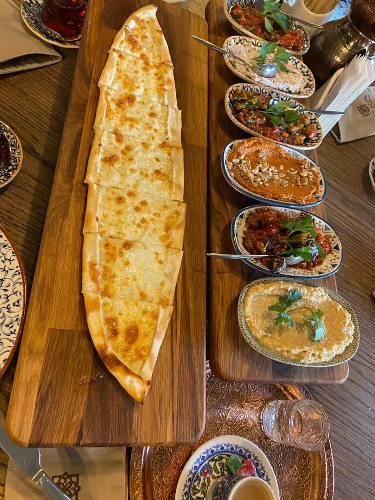
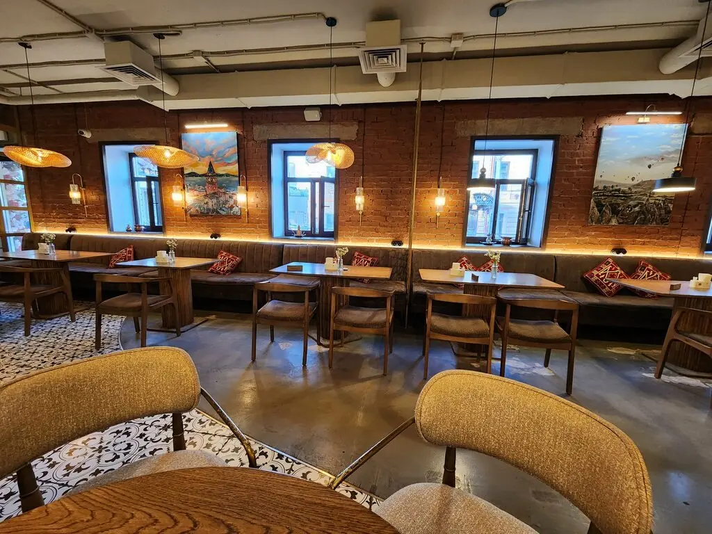
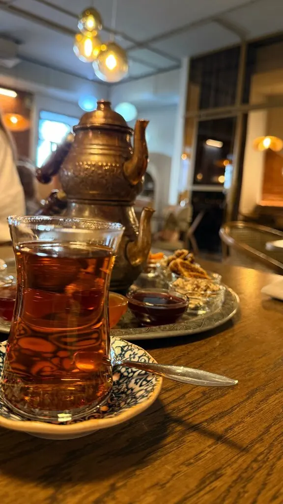
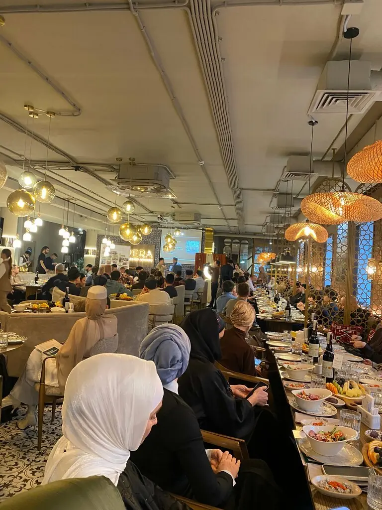
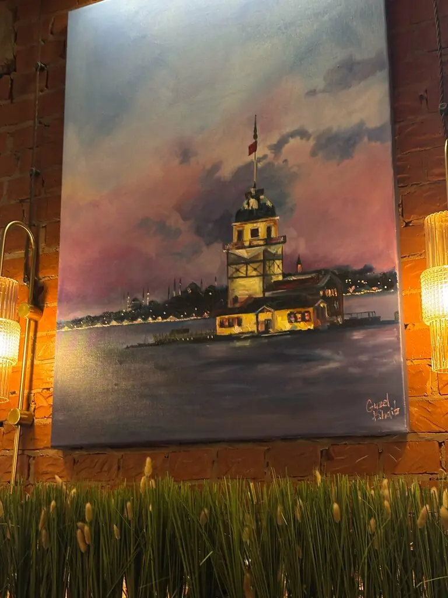
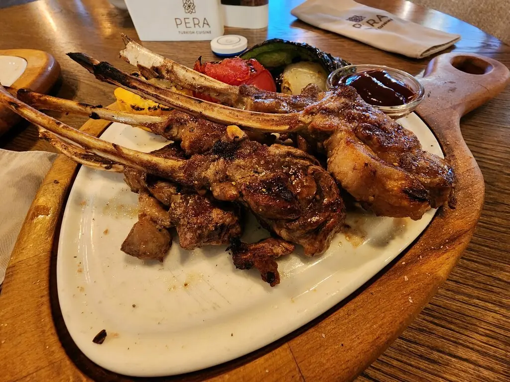
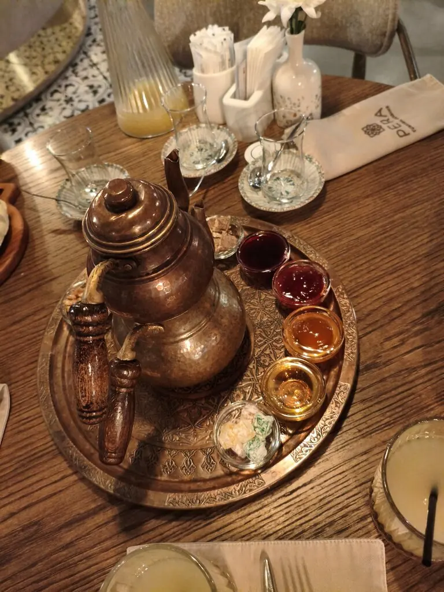
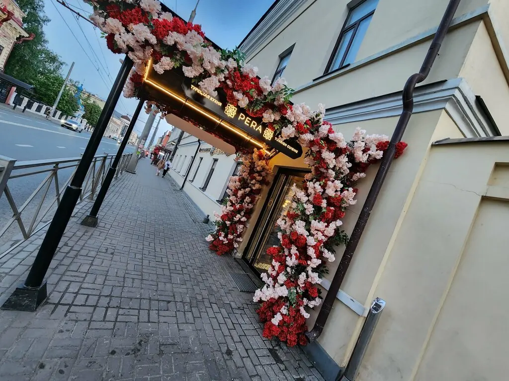

Турецкая кухня · халяль · Казань
Стамбул на Московской, 36
5,0 · 726 оценок в 2ГИС




С утра
Турецкий завтрак на весь стол
По выходным двери открываются в 9 утра, в будни в 10. Менемен, симит, яичница с суджуком и чай в тюльпановых стаканах.
3 250 ₽ богатый завтрак на компанию
Меню
Что подать к столу
Часть меню из 2ГИС. Цены могут отличаться, уточняйте при заказе.
Атмосфера
Медь, узоры, мягкий свет





Кнопка на столе
Вызвать официанта можно одним нажатием, ждать и махать рукой не нужно.Детская комната
Пока взрослые пьют чай, детям есть чем заняться. Детское меню тоже есть.Своя парковка
Для гостей ресторана, а зал вмещает до 110 человек, есть VIP-зал.Гости
Меню — гастрономическое путешествие в Турцию с локацией в Казани!Марина Савушкина
Для меня это лучшее турецкое заведение в Казани.Айгуль Михеева
Сервис отличный, а главное вкусно и всё, как в Турции.Алия Волкова
Afiyet olsun!
Приятного аппетита, ждём вас за столом.